JW Timeの使い方完全ガイド
新しい言語を追加し、手動プログラムと公式メディアの自動ダウンロードの管理を改善しました。
初回起動時、JW Timeはアプリを開く前に必要不可欠な設定を集めるウィザードを表示します。新規インストールでは推奨される手順です。設定パネルですぐにすべてのオプションを探さずに済みます。
ウィザードの最後にJW Timeを開き、メディア、Webサーバー、録音、バックアップなど、より高度なオプションだけを完了できます。
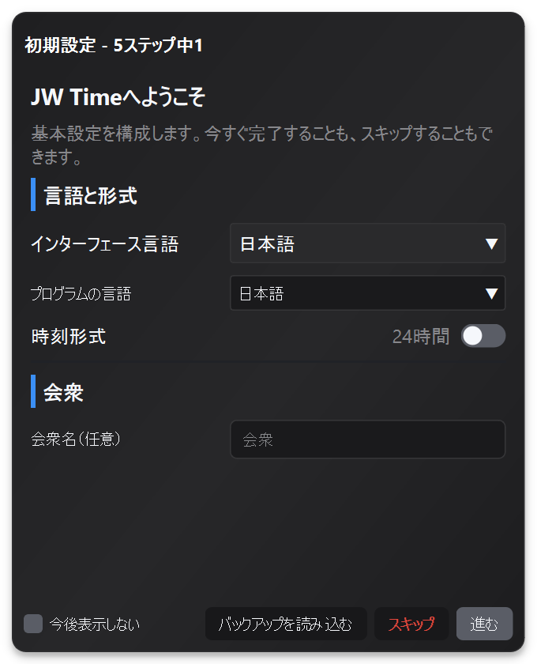
ウィザードを閉じるかスキップした場合でも、設定とメインウィンドウから必要な項目を手動で構成できます。このチェックリストは、集会前の簡易確認にも使えます。
まず セクション9・全般 で言語と時刻形式を設定し、次に セクション10・会衆 で、必要ならプロフィールを作成または選択します。読み込まれた進行表が目的の週と言語に対応していることを確認します。
設定の セクション12・画面 で正しいモニターを選択し、使用するウィンドウを有効にします。タイムカウンターの外観を変更するには、 セクション5.3・タイムカウンター画面のカスタマイズを参照してください。
まず セクション4・メディアウィンドウ を開いて、その週の歌、動画、画像を確認します。キャッシュ、品質、BGMのオプションは セクション13・メディアにあります。
メインウィンドウを使ってタイマーを開始し、タイムカウンターにメッセージを送信し、RECパネルを開きます。集会を録音する場合は、先に セクション16・録音のオプションを確認してください。
リモート操作、QR、ブラウザーからの参照を使う場合は、 セクション15・接続とサーバーを設定します。ネットワークなしで作業したり設定を移す場合は、 セクション17・オフラインパッケージとバックアップを確認します。
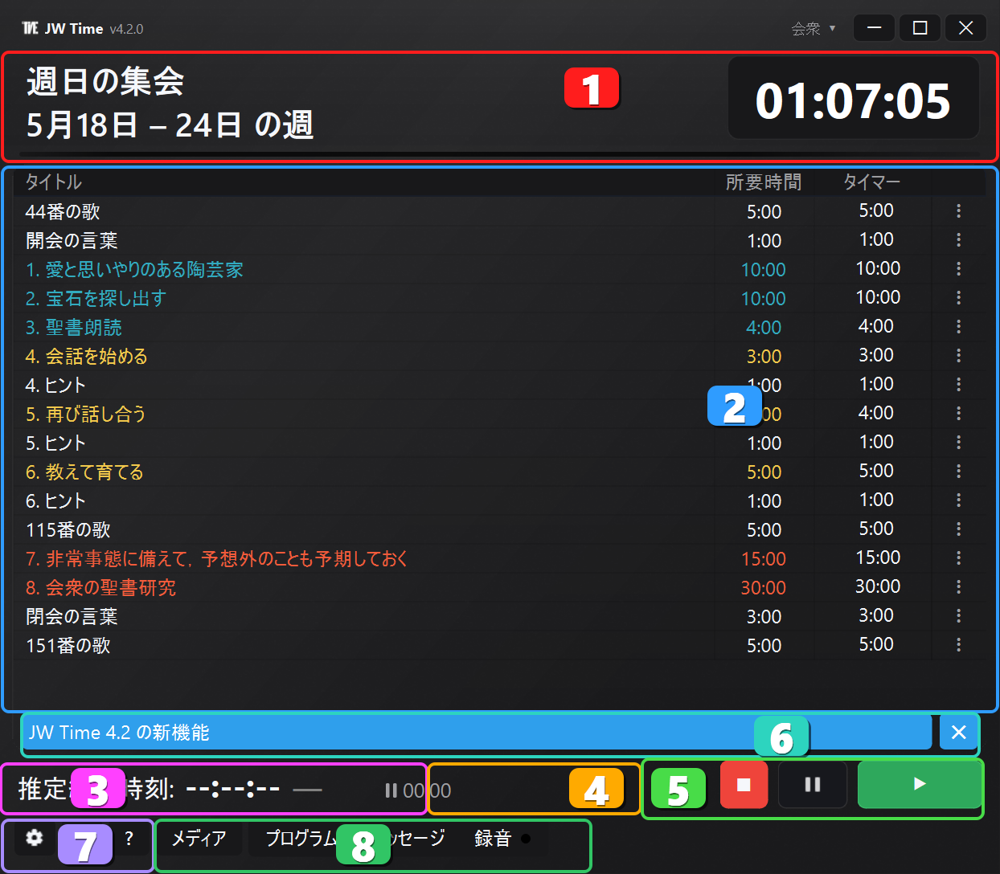
メイン画面はアプリケーションの中心です。ここから集会のすべてのタイマーを開始、管理、監視できます。また、現在進行中の部分のタイトル、時計、残り時間などの主な情報を表示し、重要なメッセージや通知も確認できます。
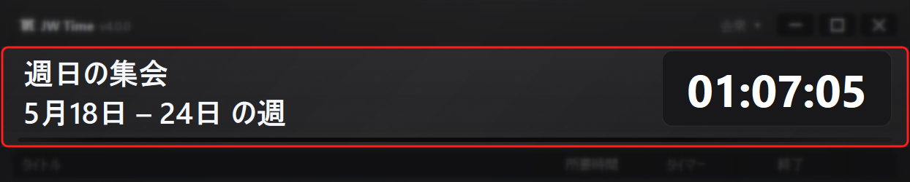
上部の行には進行中の部分のタイトルが表示され、その下には現在時刻を示す時計、またはタイマーを開始したときの残り時間のカウントダウンが表示されます。12時間形式では、読みやすくするためAM/PMの接尾辞も小さめに表示されます。
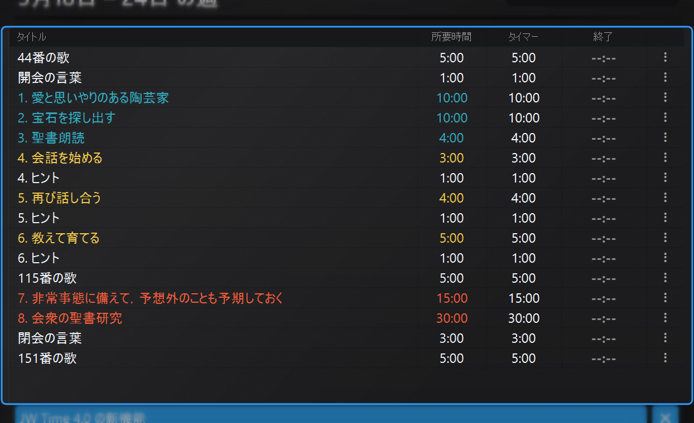
集会の進行表（タイトル、時間、状態）を一覧表示します。内容は選択した日に基づいて自動的に読み込まれます。アプリは週日の集会か週末の集会かを認識し、正しい進行表を提示します。ボタンと詳しい操作については セクション3・タイマーの操作を参照してください。
設定で 「終了」列を表示 を有効にすると、表には現在の部分とそれ以降の部分が何時に終わるかも表示されます。これは進行表の固定時刻ではありません。現在時刻、残っているタイマー、累積したずれに基づいてリアルタイムで更新される予測です。
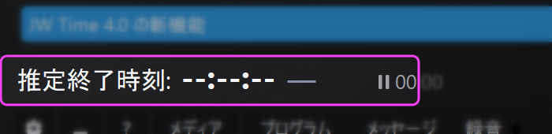
進行表に基づく予定終了時刻を表示します。その横に ずれが表示されます：
+m:ss（1分以内は黄色、それを超えると赤）= 遅れ
−m:ss（緑）= 前倒し
時刻とインジケーターはリアルタイムで更新されます。聖書研究 / 「ものみの塔」研究の自動調整が有効な場合、終了時刻に収まるよう時間が再計算されます。
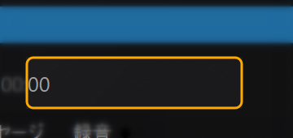
累積カウンター hh:mm:ss は、技術的な一時停止や話者交代の時間を合計します。タイマーが一時停止されていた時間の合計です。一時停止中、部分のタイマーは停止したまま、このカウンターが増えます。インジケーターをクリックすると合計がリセットされます。

タイマーを開始、停止、管理するためのコントロールです：停止（赤）、一時停止、開始/次へ（緑）。一時停止ボタンは部分のタイマーを一時停止します（カウントは止まります）が、一時停止/話者交代時間は増え続けます。一時停止を解除するには、もう一度一時停止を押すか、開始/次へで次の部分に進みます。累積時間は1.4のカウンターに記録されます。
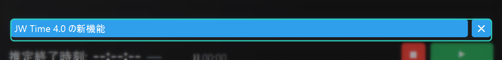
アプリの公式なお知らせがある場合、メイン画面に「ニュース」の枠/通知が表示されます。クリックすると更新内容の概要パネルが開きます。
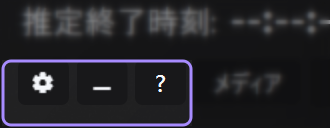
設定を開く、ウィンドウを最小化または復元する、ヘルプにアクセスするためのクイックボタンです。操作モードとは分けられているため、下部の行がより分かりやすくなっています。
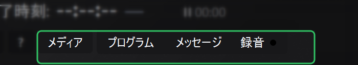
ここからメディアウィンドウ、プログラム管理、メッセージ、RECパネルに切り替えられます。RECの横にある黒い点は録音状態を示します。
このセクションでは、項目の追加、変更、削除など、タイマーを管理する主な操作と、開始、スキップ、リセットのコマンドの使い方を説明します。
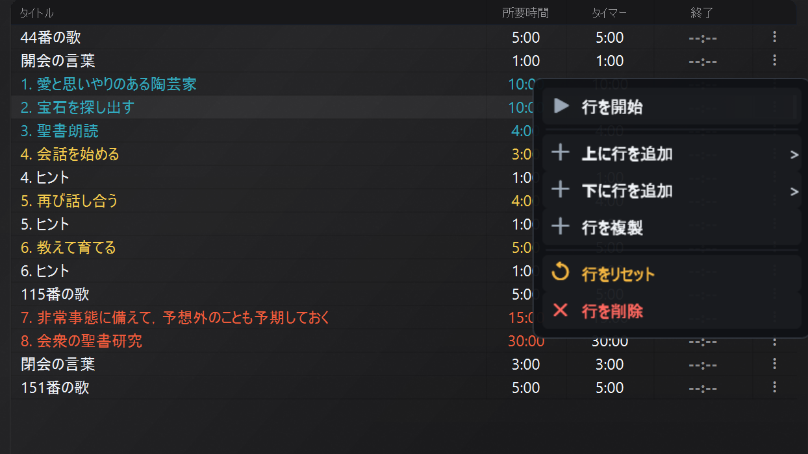
タイマーは常に更新されます。上部のメインカウントダウンには進行中の部分の残り時間が表示され、対応する行は表で強調表示されたままになります。上部バーの色は進行中の部分の色に合わせられます。
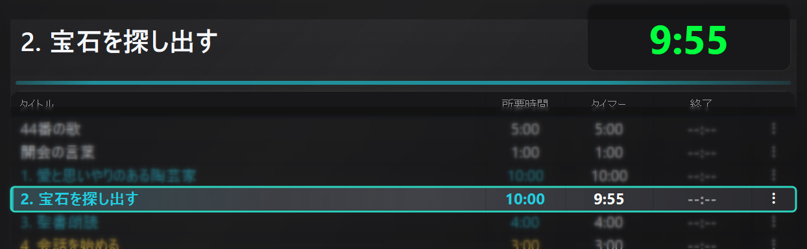
所要時間を変更したり次の部分へ進んだりすると、終了予定時刻がすぐ再計算されます。これにより、他のパネルを開かなくても、早まり/遅れの差分や、休憩または話者交代で累積した時間を確認できます。
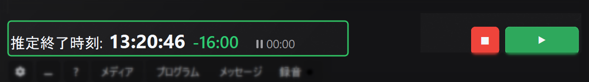
設定で会衆の聖書研究の適応調整や「ものみの塔」研究の適応調整が有効になっている場合、アプリは選択された部分の所要時間を動的に調整し、集会の終了時刻を保ちます。調整は有効なオプションがある部分だけに適用され、累積した早まり/遅れに基づいて分数を自動で増減できます。画像では、対象の行が切り離して表示され、調整後の値がオレンジ色で強調されるため、どのタイマーが修正されたかすぐ分かります。いつでも手動で変更できます。適応調整は新しい状況から再計算します。
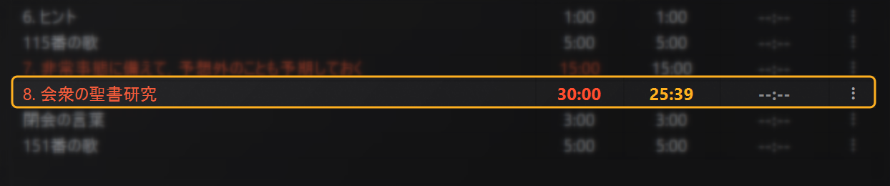
メディアウィンドウには、その週に関連付けられたコンテンツが集められます。歌、動画、画像、部分に役立つ参照です。操作者が集会を準備し、利用できるコンテンツを確認し、必要なときに開始する助けになります。
使用上の注意: メディアウィンドウは、操作者がすでに利用できるマルチメディアコンテンツを準備、確認、管理するための補助ツールです。実際の使用は地元の必要に応じて行い、会衆の指示や取り決めと常に調和していなければなりません。技術的に必要な場合は、補助または予備の手段として使うこともできます。
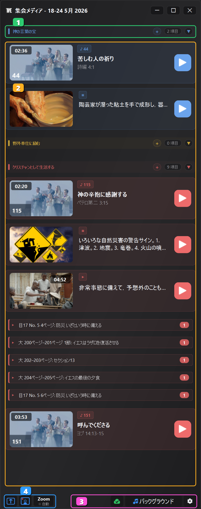
エリア1は、その週の公式メディアがまだオフラインで利用できない場合に知らせます。すぐにダウンロードすることも、後で行うこともできます。同じ動作は、設定の セクション13 · メディアで公式メディアの自動ダウンロードを有効にすることで自動化できます。通知の下には進行表のセクションがあり、色付きのタイトル、項目数、クイックコマンドが表示されます。
注: 公式メディアをダウンロードするには、ネットワークがJW Timeからjw.orgとメディアに使われるリソースへのアクセスを許可している必要があります。プログラム用に導入された代替ダウンロードは、メディアでは利用できません。ルーター、ファイアウォール、DNS、コンテンツフィルターが宗教関連サイトやJW Timeのアクセスをブロックしている場合、公式メディアをダウンロードできないことがあります。その場合は、すでにオフラインにあるメディアを使うか、ローカルファイルを手動で追加できます。
エリア2には、プレビュー、タイトル、参照、開始ボタンを備えたカードがあります。色は進行表のエリアと対応しているため、部分に関連付けられた歌、画像、動画、参照をすばやく見つけられます。
コンテキストメニューから、項目を使用済みまたは未使用として手動でマークできます。オプション「 使用済みメディアを薄く表示 」が有効な場合、使用済みのコンテンツは控えめなスタイルで見分けられる状態のままになります。公式の動画、音声、画像を選ぶウィンドウには、次のモードもあります: 「 グローバル」。現在のカテゴリの外を検索する必要があるときに便利です。
エリア3には、メディアウィンドウのクイックコマンドが集められています。ダウンロード済みコンテンツ、プレビュー、同期、BGM、専用設定です。一覧が長い場合でも操作できるよう、下部に固定されています。
エリア4には、メディアウィンドウのZoomコマンドが集められています。ビデオ会議でもメディアを表示し、会場のモニターで会場表示画面を使う人のために用意されています。
これらのボタンを使う前に、Zoomで画面共有用のグローバルショートカットを設定し、同じキーの組み合わせを セクション14 · Zoomに入力します。2つのショートカットが一致していない場合、JW Timeはコマンドを送信しますが、Zoomは期待どおりに反応しません。
「 BGM 」パネルは集会前の音楽を管理し、設定されている場合は集会後の音楽も管理します。進行表のメディアとは混ざりません。再生中は、現在の曲、次の曲、進行状況、長さを表示します。
開始、一時停止、前または次の曲への移動、シャッフル再生の有効化、プレイリストの表示ができます。自動動作やフェードを含む音楽設定は、 セクション13 · メディアパネルで設定します。
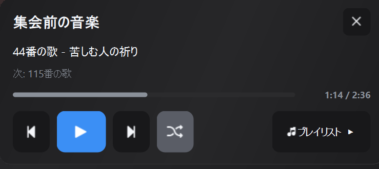
JW Time 4.0では表示が分かれています。「 会場表示画面 」は会場に表示するコンテンツのためのもので、「 タイムカウンター画面 」は時間を確認する人専用のままです。
会場表示画面は、カウントダウン、歓迎メッセージ、年句、ロゴ、視覚コンテンツを別ウィンドウに表示します。
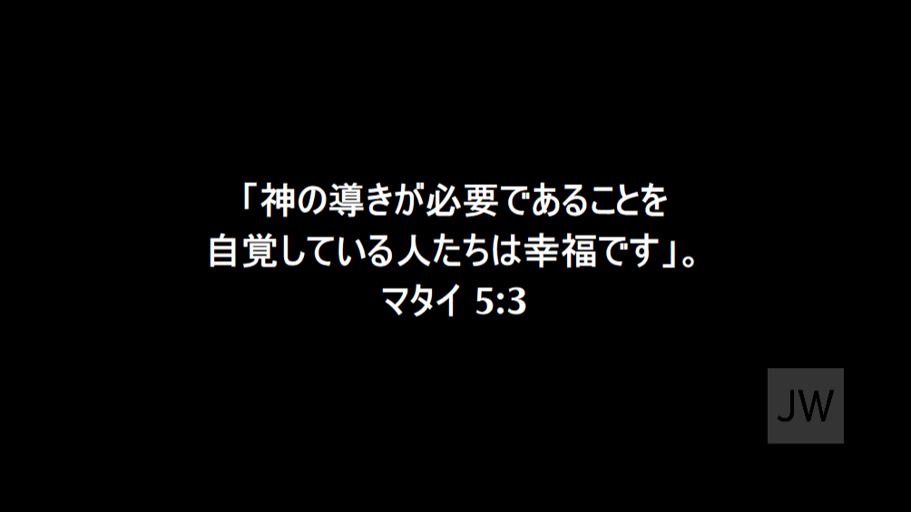
タイムカウンター画面には、時計、現在進行中の部分のカウントダウン、話し手へのメッセージ、時間管理に関連した状態が表示されます。演壇、司会者、時間係に最も適した表示です。
レイアウトのカスタマイズについては、別途 セクション5.3 · タイムカウンター画面をカスタマイズするで扱います。これにより、画面の日常的な使用と表示設定を分けて考えられます。

タイムカウンター画面は カスタマイズ ボタンから セクション9 · 全般で変更できます。
利用可能なプリセットから始めることも、必要に応じてレイアウトを変更することもできます。会場表示画面には、独自の設定が セクション12 · 画面にあります。ここではタイムカウンターのレイアウトに作業を絞ります。
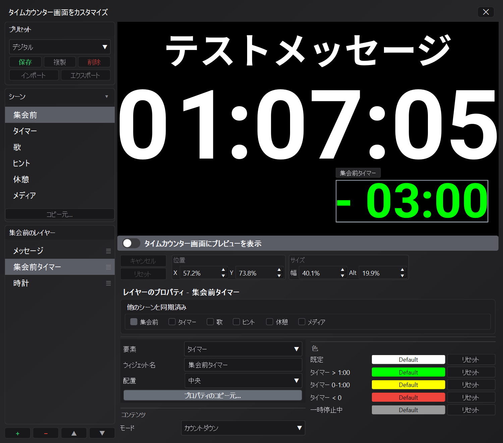
レイアウトはシーンごとに構成されています。
各シーンは、タイムカウンター画面の異なる状況に対応します。これにより、表示する時点や部分の種類に応じて別のレイアウトを表示できます。
変更する前に、どのシーンが選択されているかを必ず確認してください。
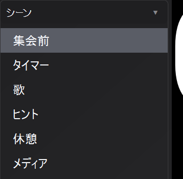
レイヤーパネルで + を押すと、JW Time はシーンに追加できる要素の種類を表示します。一部のレイヤーは集会の実データを読み取って自動的に変化し、他のレイヤーはグラフィックレイアウトを作るために使います。
各レイヤーのすべてのプロパティをマニュアルに載せるのは適切ではありません。プロパティパネルは選択した種類に応じて変わるためです。ここでは、各レイヤーが何をするか、いつ使うかを説明します。
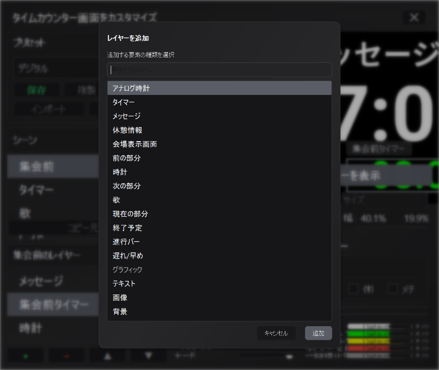
次のレイヤー: 背景、 テキスト 、 画像 は複数回追加できます。その他のレイヤーでは、同じ種類の要素がすでに存在する場合、エディターはそれを別のシーンに関連付けるか、対応している場合は独立した要素を作成するかを提案します。
エディターでは、選択したシーンにあるレイヤーを変更できます。
各レイヤーでは、位置とサイズを3つの方法で調整できます。
X と Y の値はレイヤーの位置を制御します。
幅と高さの値はレイヤーのサイズを制御します。
これらの値はすべてパーセントで表されます。
レイヤーパネルでは、重なり順も管理できます。各レイヤーは他のレイヤーの上または下に配置でき、重なった場合にどれが前面に表示されるかを決めます。順序は、リスト内でレイヤーをドラッグするか、 ▲ と ▼ ボタンを使って変更できます。
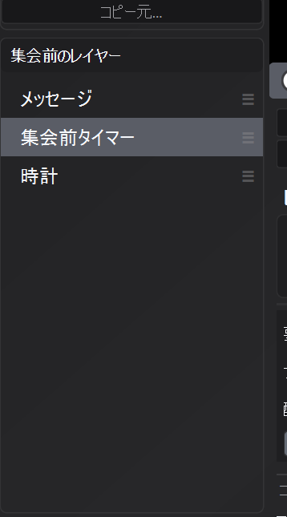
レイヤーを選択した後、次の操作ができます。
プレビューの下には数値コントロール X, Y, 幅 と 高さ があり、位置とサイズを正確に調整できます。
変更後、レイアウトを保存して適用します。エディターはいつでも再度開いて更新できます。
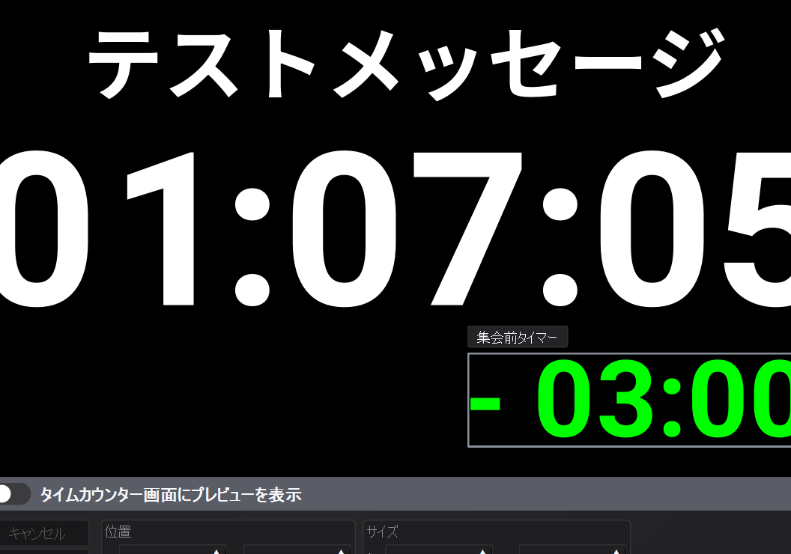
メッセージ機能を使うと、集会中に話し手と控えめかつ明確に連絡できます。部分の進行を遮ったり妨げたりせずに知らせたり指示を出したりできます。メッセージはタイムカウンター画面に表示されるため、話し手は気を散らされずにリアルタイムで確認できます。
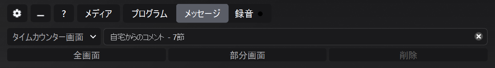
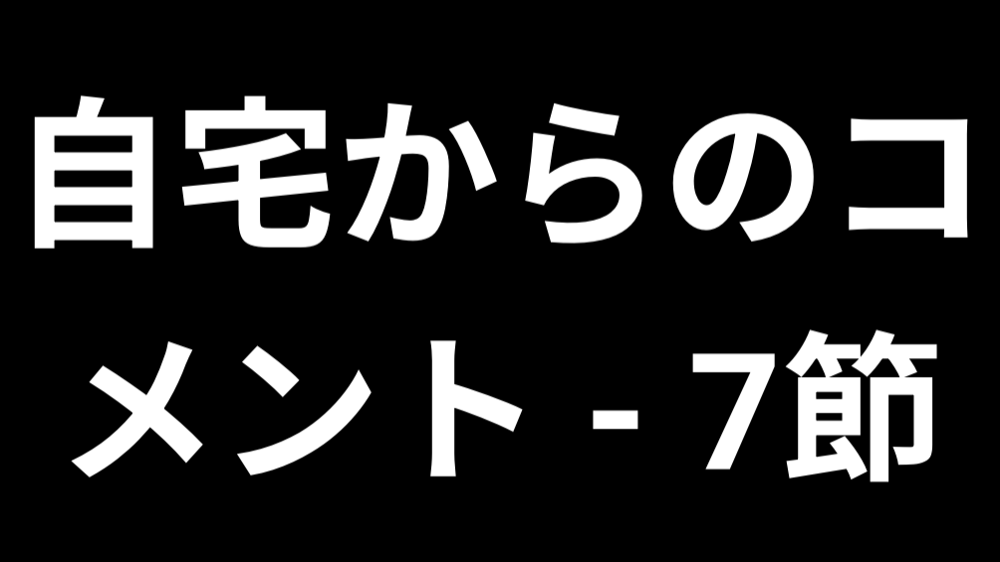
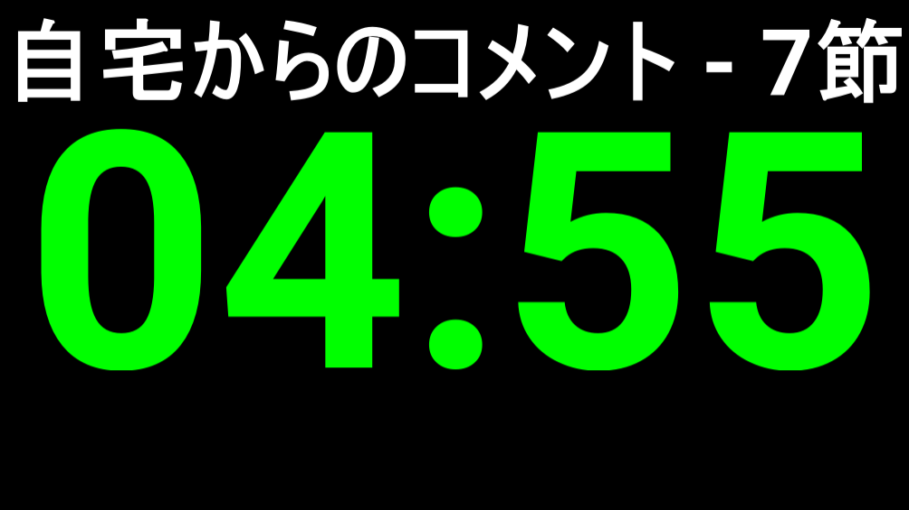
メッセージを送信すると、サイズ変更と移動が可能なプレビューウィンドウが自動的に表示され、話し手がタイムカウンター用モニターで見ている内容をそのまま示します。これにより、メッセージとタイマーの表示をリアルタイムで確認できます。
「 REC 」ボタンは下部バーの「プログラム」と「メッセージ」の隣にあります。文字の横の丸印は録音の状態（待機中、録音中、一時停止、MP3変換中）を示し、RECパネルでは JWTimeREC フォルダーを開く、手動録音を管理する、PCとマイクの音声レベルを監視するためのクイック操作を行えます。
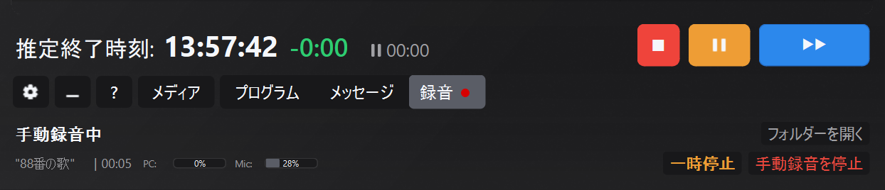
RECパネルには、設定に入らずに使える操作がまとまっています。
下部バーでRECを開くと、録音状態と音声メーターを常に確認できるパネルが表示されます。 ここから手動録音の開始と停止、PC/マイクのレベル確認、JWTimeRECフォルダーの表示をワンクリックで行えます。
Webサーバーが有効なときは、同じローカルネットワーク上の別の端末からブラウザーで開けます。 これにより、プロジェクター、タブレット、別のコンピューターでタイムカウンターを表示でき、各部分の時間を確認する司会者にも役立ちます。
Webサーバー、リモート操作、リモートリンク、QRの詳しい設定については、15 · 接続とサーバーを参照してください。
ブラウザーから次のことができます。
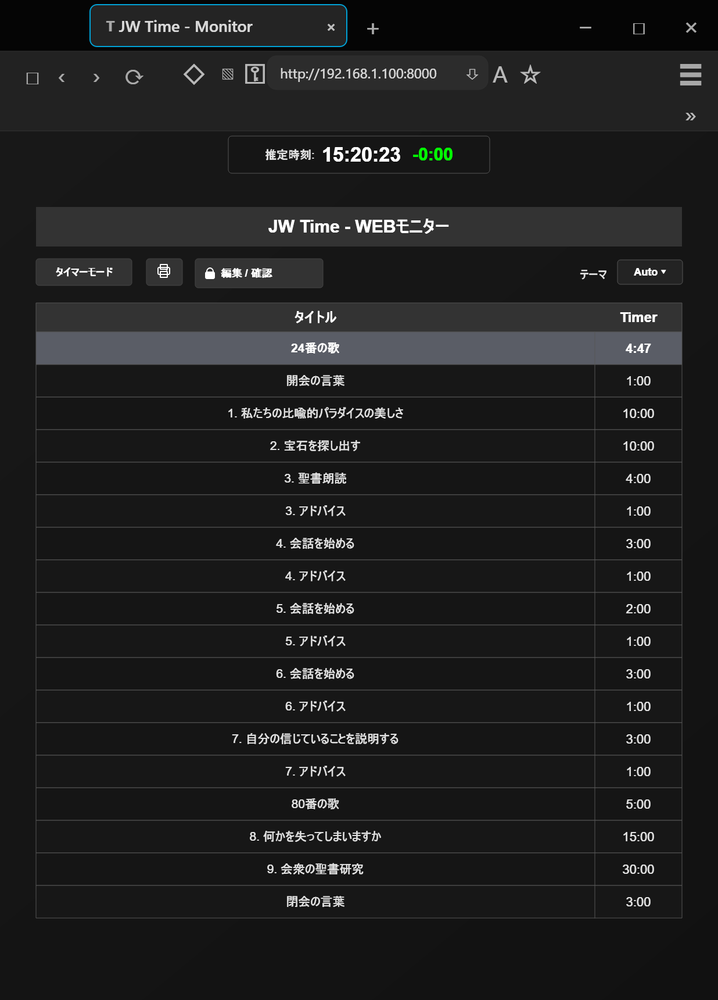
リモート操作が有効な場合、メインのコンピューターの前にいなくても、ブラウザーからタイマーとプログラムを操作できます。
利用できる操作は設定された権限によって異なり、次のものを含めることができます。
アプリに表示されるアドレスを入力するか、利用できる場合はQRを使ってWebサーバーを開けます。
設定に応じて、表示のみ、操作と変更など、異なるアクセスレベルを用意できます。 設定されている場合、アクセスにはPINが必要になることがあります。
完全な設定については、セクション15 · 接続とサーバーを参照してください。
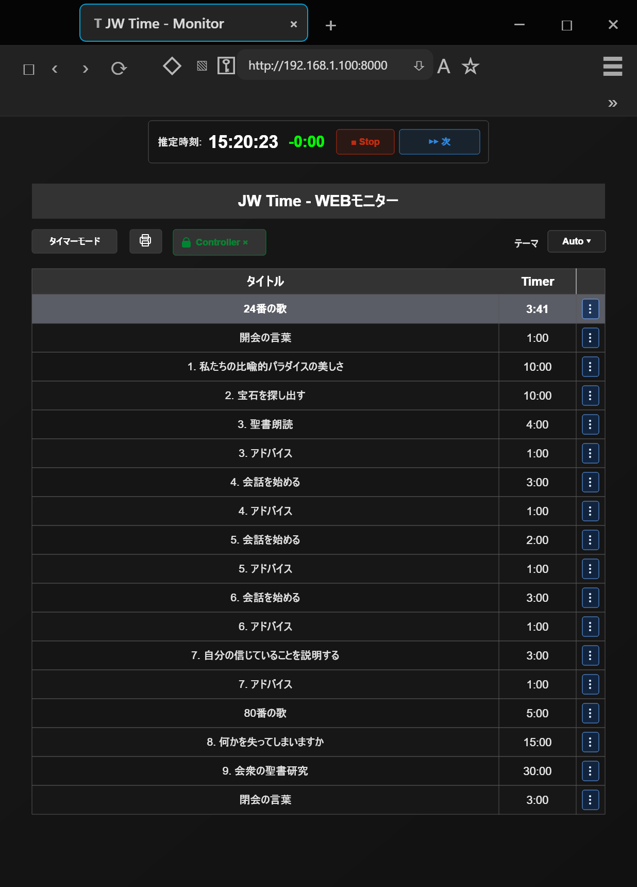
JW Timeを確認または操作する人が同じローカルネットワーク上にいない場合、一時的なリモートリンクを生成できます。 これは、ビデオ会議での集会、リモートサポート、別のネットワークに接続した端末からの操作に役立ちます。
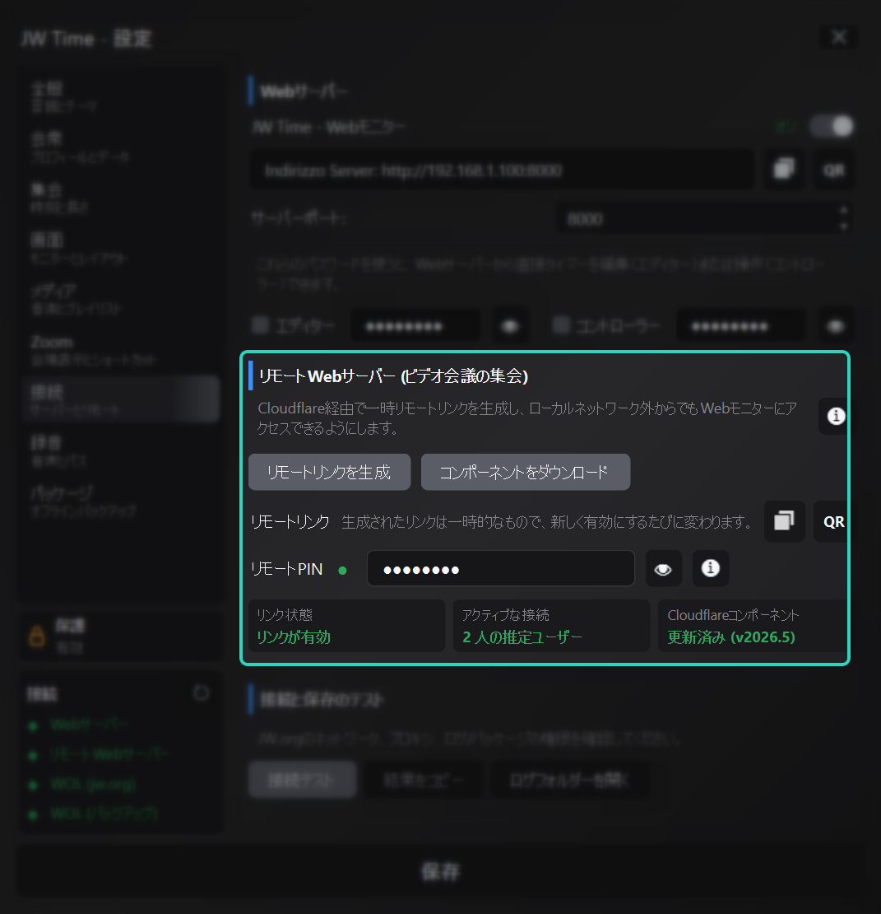
実際の設定は15.2 · リモートWebサーバーで行います。 Zoomの設定は別です。Zoomは共有やショートカットを管理し、リモートリンクはWebモニターに関するものです。
この部分では、アプリの動作を設定できます。一般設定、会衆プロフィール、集会、 タイムカウンター画面、メディア、Zoom、Webモニターとサーバー、録音、バックアップと復元を扱います。
保存ボタンで、すべての変更を適用します。
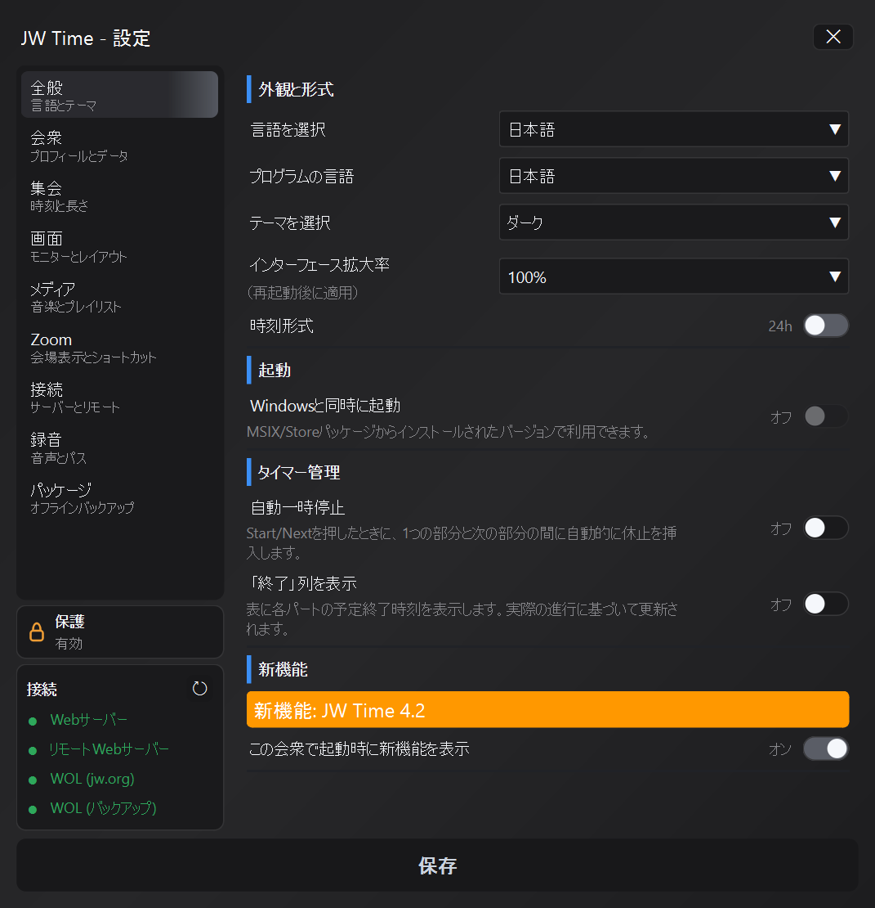
このパネルでは会衆プロフィールを管理できます。各プロフィールには専用の設定を保存できるため、 ウィンドウ、メディア、レイアウトを毎回設定し直さなくても、JW Timeを異なる状況に合わせられます。
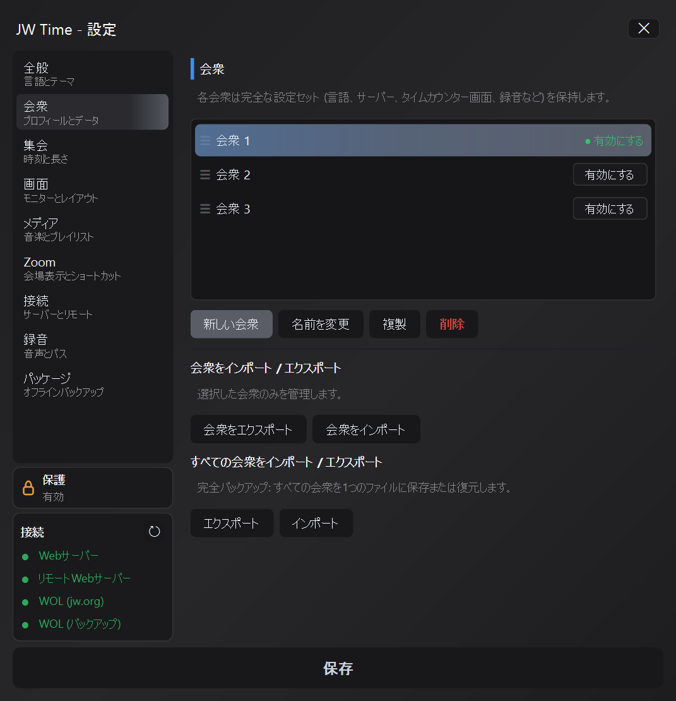
このパネルでは、会場表示画面に出す集会開始カウントダウンを設定します。 カウントダウンを開始する曜日、時刻、事前表示時間（分）を指定します。
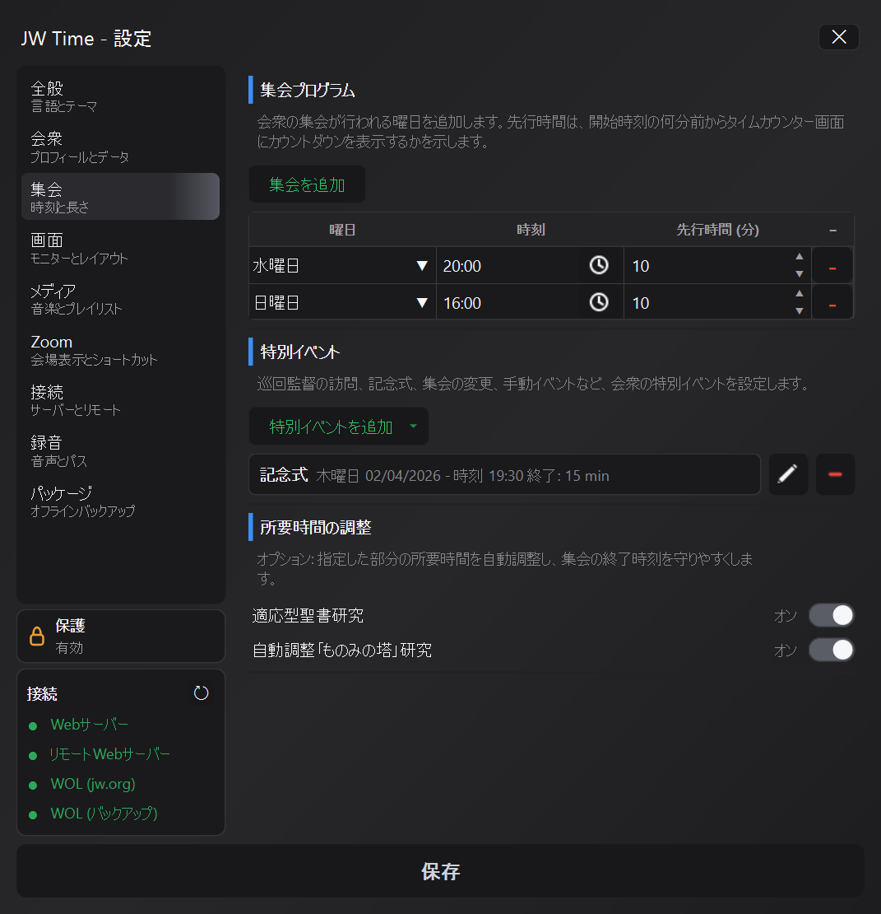
注: 開始時刻は会場表示画面のカウントダウンに使われます。一方、終了予定時刻は進行表と、必要に応じた時間調整によって決まります。
このパネルには、タイムカウンター画面と会場表示画面に関する設定がまとまっています。 どこに情報を表示するか、どのように見せるか、集会中にどの要素を表示するかを選べます。
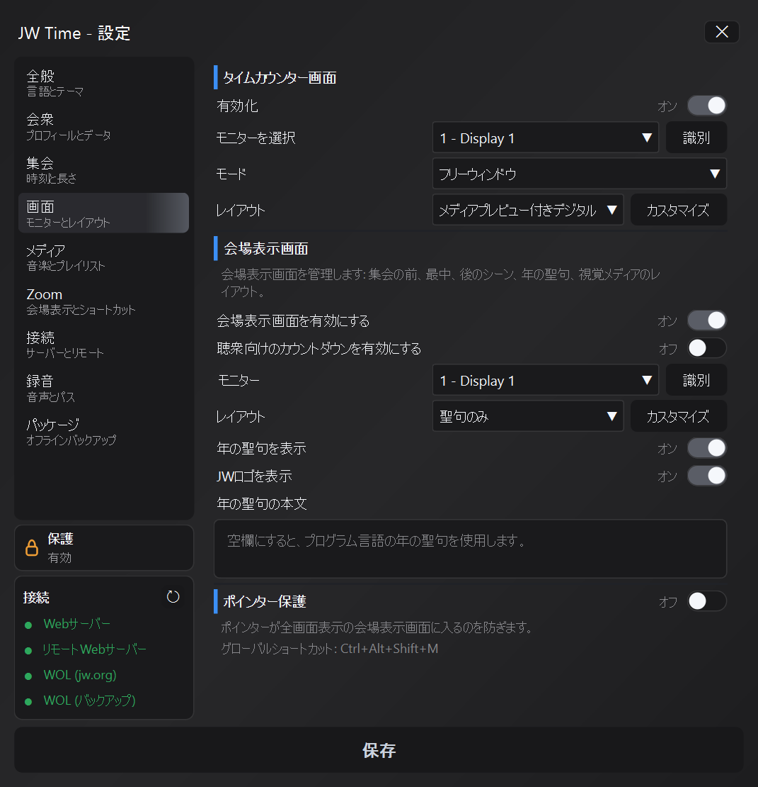
このパネルでは、メディアウィンドウの動作、ローカルキャッシュ、集会中または集会後に使うコンテンツに関連するオプションを管理します。
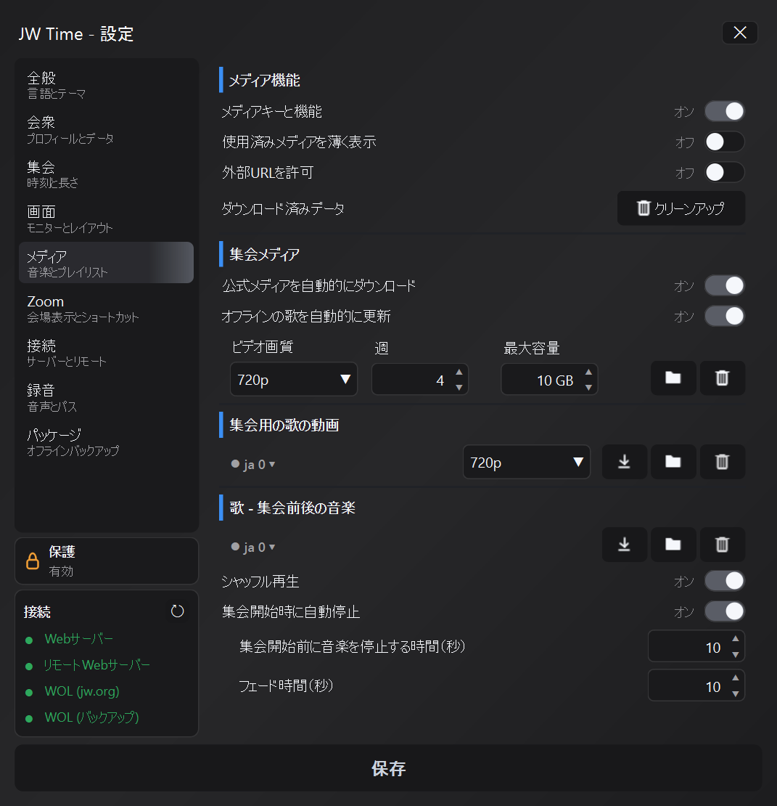
このパネルには、JW TimeをZoomや、専用の音声/動画操作が必要な会場設定と一緒に使う場合に役立つ設定が含まれます。 下のオプションは、セクション4 · メディアウィンドウのZoomボタンに反映されます。
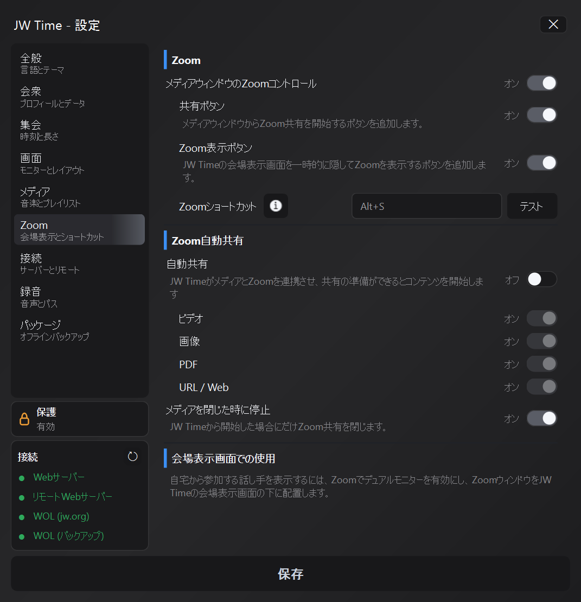
JW Timeは、Zoomで共有するウィンドウや画面を代わりに選ぶわけではありません。このパネルで指定したキーの組み合わせを送信します。 そのため、同じショートカットをZoomの設定でも有効にしておく必要があります。できればグローバルショートカットとして設定します。 Zoom側で別の組み合わせを使っていると、共有ボタンとZoom Autoモードは安定して動作しません。
集会前に一連の流れを確認してください。Zoomを会場モニターに準備し、話者のウィンドウまたはZoomの複製画面を会場表示画面の下に配置し、 テストでショートカットを試してから、メディアウィンドウの操作を使います。
ビデオ会議の集会中に、ネットワーク外の人がJW Timeを確認または操作する必要がある場合、 Zoomではなく8.3 · ビデオ会議の集会で使うリモートアクセスを使用します。 このパネルでは、ショートカット、共有、Zoomウィンドウの管理だけを扱います。
このパネルでは、アプリの接続機能を管理します。ブラウザーで表示や操作を行うためのWebモニターとWebサーバー、 すばやくアクセスするためのQR、リモート操作、高度な接続テスト、ログ管理を設定できます。
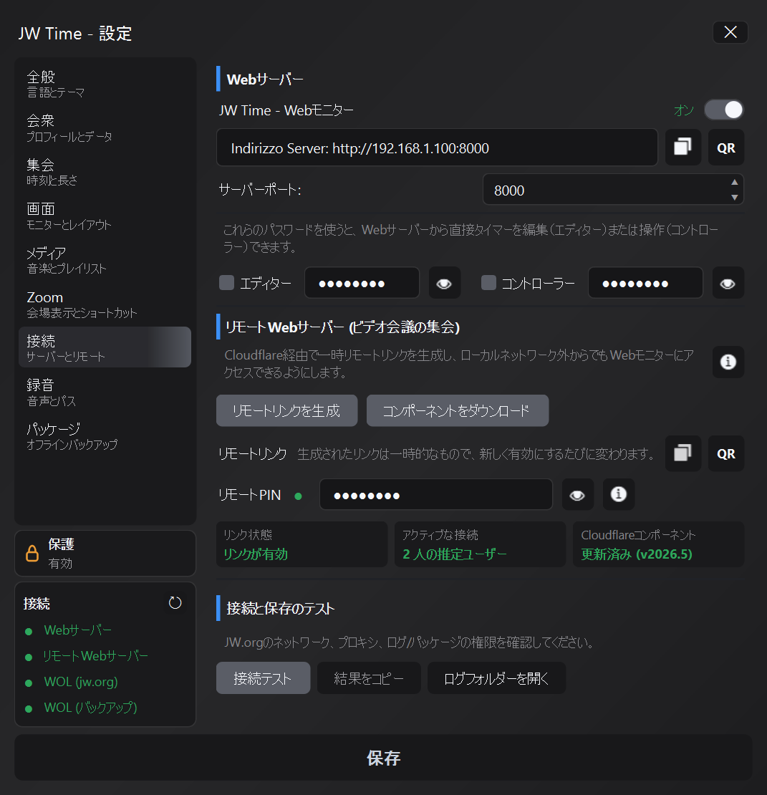
http://192.168.1.100:8000 のような一般的なアドレスを使用します。Webサーバーが有効なときは、同じローカルネットワーク上の別の端末からブラウザーでJW Timeを開き、 スマートフォン、タブレット、別のコンピューターでWebモニターを使用できます。
このセクションでは、ビデオ会議での集会など、ローカルネットワーク外からもWebモニターにアクセスできるようにします。 使用する場面については、8.3 · ビデオ会議の集会で使うリモートアクセスを参照してください。 ここでは実際の操作を行います。
この機能が有効な場合、Webサーバーは表示だけでなく、タイマーやプログラムをリモートで操作するためにも使えます。 Controllerロールが有効な場合、Web画面には、部分の長さなど利用可能な値を調整する操作も表示されます。
利用できる操作には、次のものを含めることができます。
設定に応じて、単なる閲覧と、操作または変更の機能を区別するために、複数のアクセスレベルを用意できます。
集会の音声録音機能です。設定の「録音」タブと、メインウィンドウのRECボタンから利用できます。
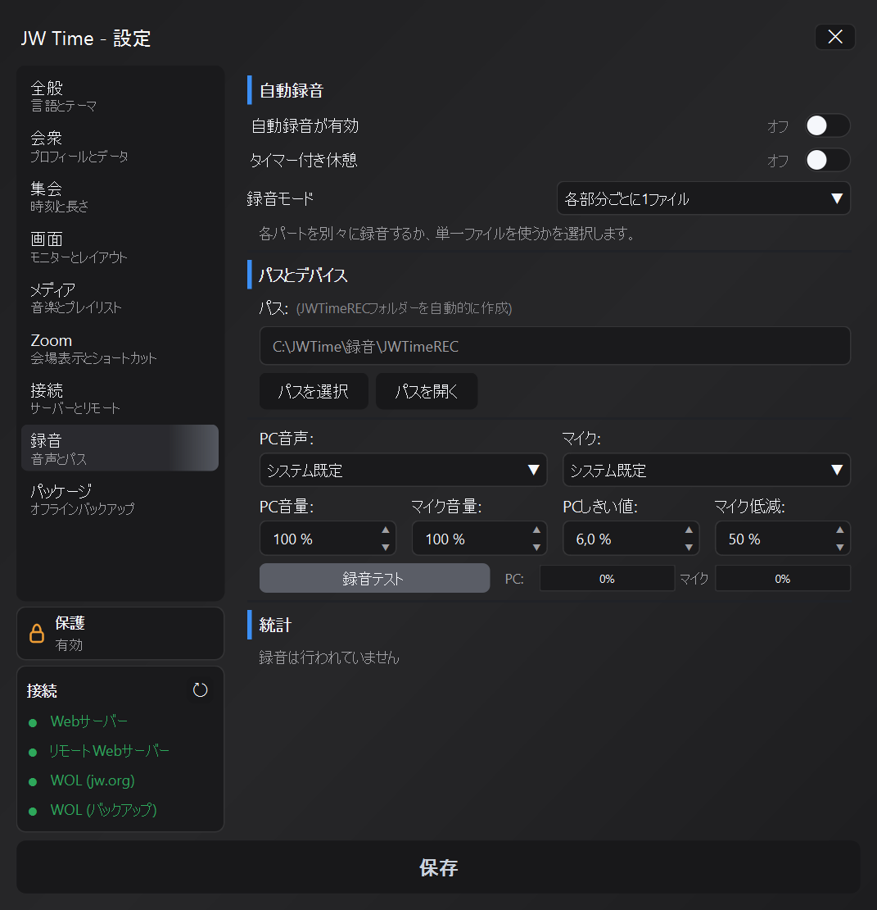
このパネルでは、週ごとのプログラムをオフラインで使えるように準備し、保存済みパッケージをエクスポートまたはインポートできます。
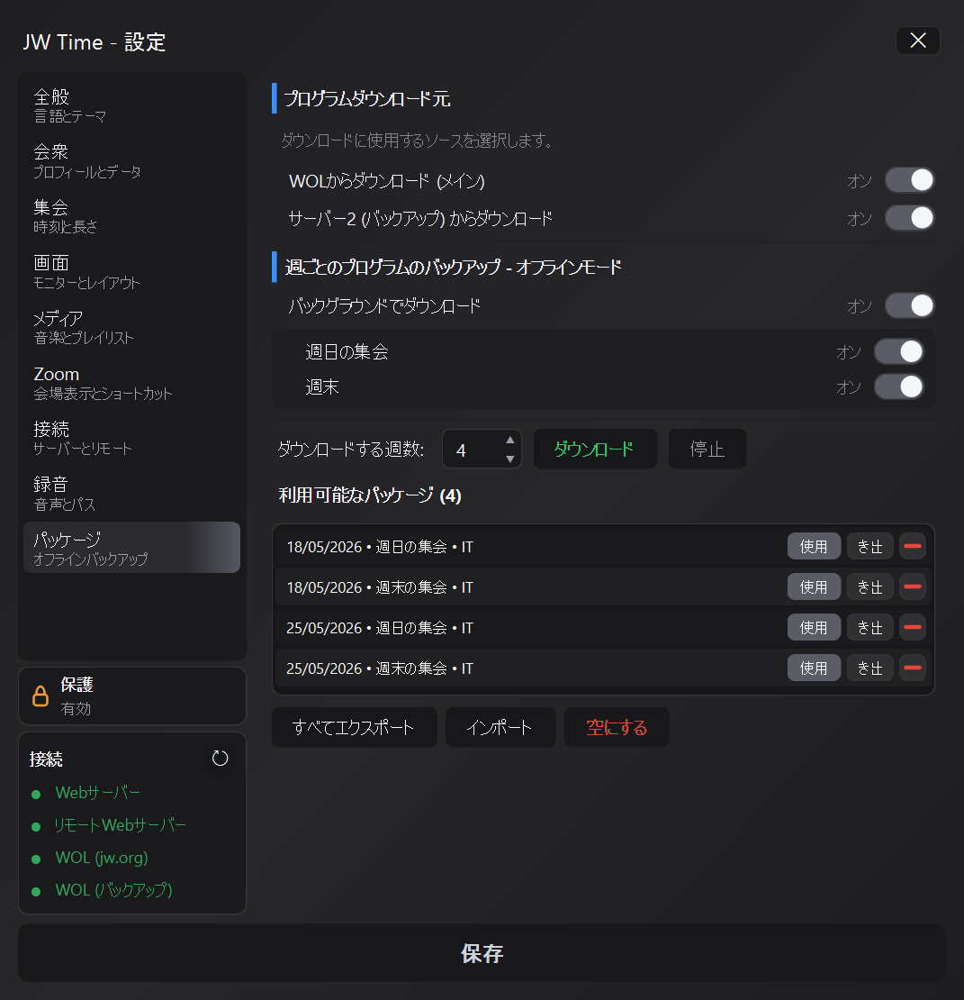